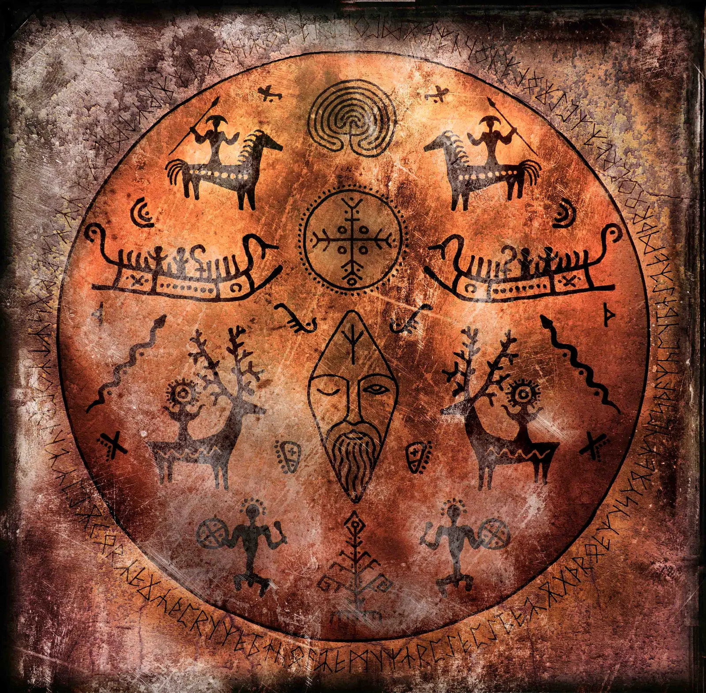

01
«Новые Скифы»
Арт-дирекция, визуальная идентичность, скифская пластика костюма и фотообраза.

Этнофутуризм · Русский Север
«Художник сродни шаману: через объектив, пластику и свет он связывает мир первозданной природы с духом современности».
Философия автора
Вячеслав Ларионов — архангельский художник, концептуальный фотограф и визуальный исследователь. Творчество неразрывно связано с атмосферой Беломорья, скифской пластикой и древними архетипами поморской культуры.
Каждая серия — не репортаж и не постановка, а исследование взаимодействия человека с северным светом, природными стихиями и памятью земли. С начала 1990-х он снимал архаику и этнику; после армии окончил Академию культуры и искусств в Петербурге на кафедре кино и фото. Бывший авангардист, он пришёл к Генону, Эволе и Элиаде — и нашёл настоящую Традицию там, где её уже не ищут.
Арт-направления
Три направления, в которых работает художник: пластика тела, ленд-арт и мистериальная фотография.
01
Арт-дирекция, визуальная идентичность, скифская пластика костюма и фотообраза.
02
Ленд-арт, кинематографические хроники и перформансы на берегах Северной Двины.
03
Мистериальные съёмки, полярные белые ночи и циклы природной светотени.
9 направлений
Работы разложены по пластам: свой материал, своя география, своя задача. Начните с любого.
Новая Архаика
Простые изображения: олень, всадник, солнечный круг, ладонь. Камень как память, а не как декорация. Работы выросли из поездок по Томской Писанице и Пермскому звериному ст
264 работы →
Стоунхендж, камни, круги
Валуны, менгиры, разрушенные алтари. Здесь камень говорит — весом, трещиной, направлением взгляда. Стоунхендж и северные каменные круги поставлены рядом не как сравнение,
27 работ →
Обереги, талисманы, онгоны
Предметы, которые носят на теле: костяные подвески, бляхи, зубы, куски дерева. Маленькая пластика держит на себе всю мифологию — здесь важна не форма, а то, к чему она пр
432 работы →
Ленд-арт Русского Севера
Перформансы на берегах Северной Двины, кинематографические хроники, скифская пластика костюма. Самое телесное и самое документальное направление: здесь камера фиксирует с
289 работ →
Русский Север
Беломорье, поморская культура, древние архетипы края. Место силы художника: северный свет, древесная фактура, вода, камень — всё, из чего здесь делают мифологию.
485 работ →
Шаманские мотивы, мандалы
Бубен, амулеты, духи, медитативные круги, Лики Танатоса. Самое личное и самое закрытое направление: здесь художник работает не с пейзажем, а с внутренним пространством.
312 работ →
Живое звучание
Духовые инструменты, бубен, звук в ландшафте. Карело-гиперборейская утопия и полярные ночи как состояние, для которого музыка и есть язык.
205 работ →
Фотография
Классическая работа с видом: город, натура, ранние абстрактофилия и эскизы, цифровое искусство и графика. Постановочная и документальная фотография в одном ряду — подчёрк
488 работ →
Поэзис, Бодлер, абсурд
Поэзис, архивы Бодлера, апокалиптико-мета-абсурдистика и автопортрет. Здесь фотография становится иллюстрацией к мысли, а мысль — частью изображения.
262 работы →
Авторская галерея
Нажмите на снимок для полноэкранного просмотра. Листайте стрелками, свайпом или клавишами ← →.
Новая Архаика
Простые изображения: олень, всадник, солнечный круг, ладонь. Камень как память, а не как декорация. Работы выросли из поездок по Томской Писанице и Пермскому звериному стилю — мест, где рисунок старше любой письменности.
264 работы
Стоунхендж, камни, круги
Валуны, менгиры, разрушенные алтари. Здесь камень говорит — весом, трещиной, направлением взгляда. Стоунхендж и северные каменные круги поставлены рядом не как сравнение, а как родственники: одна мысль, разная география.
27 работ
Обереги, талисманы, онгоны
Предметы, которые носят на теле: костяные подвески, бляхи, зубы, куски дерева. Маленькая пластика держит на себе всю мифологию — здесь важна не форма, а то, к чему она привязана.
432 работы
Ленд-арт Русского Севера
Перформансы на берегах Северной Двины, кинематографические хроники, скифская пластика костюма. Самое телесное и самое документальное направление: здесь камера фиксирует событие, а не создаёт его.
289 работ
Русский Север
Беломорье, поморская культура, древние архетипы края. Место силы художника: северный свет, древесная фактура, вода, камень — всё, из чего здесь делают мифологию.
485 работ
Шаманские мотивы, мандалы
Бубен, амулеты, духи, медитативные круги, Лики Танатоса. Самое личное и самое закрытое направление: здесь художник работает не с пейзажем, а с внутренним пространством.
312 работ
Живое звучание
Духовые инструменты, бубен, звук в ландшафте. Карело-гиперборейская утопия и полярные ночи как состояние, для которого музыка и есть язык.
205 работ
Фотография
Классическая работа с видом: город, натура, ранние абстрактофилия и эскизы, цифровое искусство и графика. Постановочная и документальная фотография в одном ряду — подчёркивает, что для художника важнее не жанр, а точность взгляда.
488 работ
Поэзис, Бодлер, абсурд
Поэзис, архивы Бодлера, апокалиптико-мета-абсурдистика и автопортрет. Здесь фотография становится иллюстрацией к мысли, а мысль — частью изображения.
262 работы
Изображают его
Это работы других авторов. Здесь они собраны отдельно, чтобы не выдавать чужие работы за его собственные.
4 работы
Всего работ: 2764
Медиа, интервью и исследования
Всё, что удалось собрать в открытых источниках. Ссылки ведут на материалы целиком.
Видео
Связь с автором
Выставки, совместные арт-резиденции, авторские фотосессии и приобретение работ — напрямую.
Звонки и сообщения принимаются в рабочее время. Номер открыт для вопросов о выставках, покупке работ и совместных проектах.